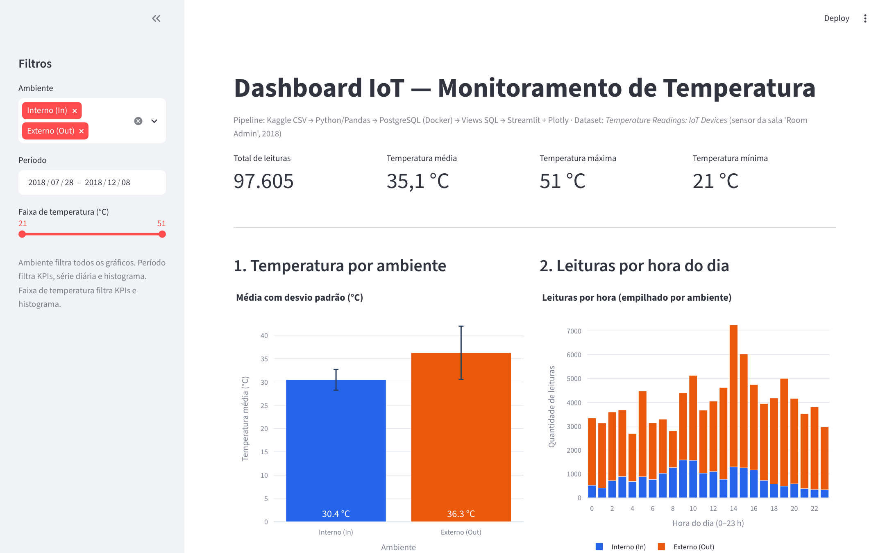
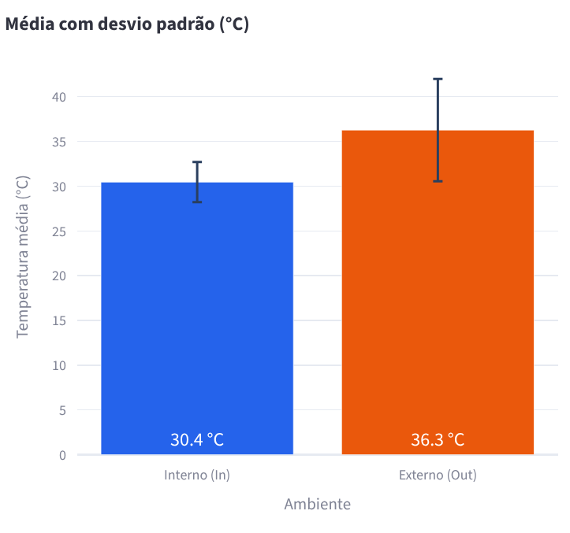
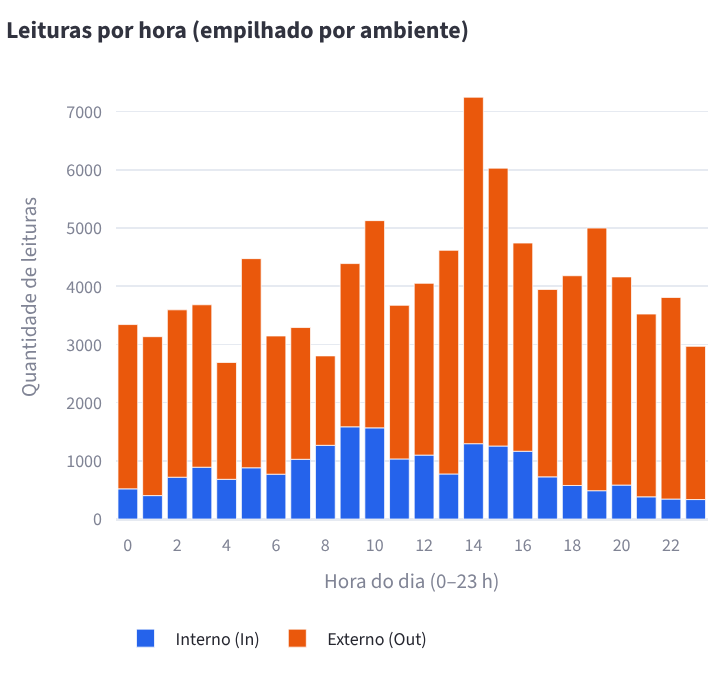
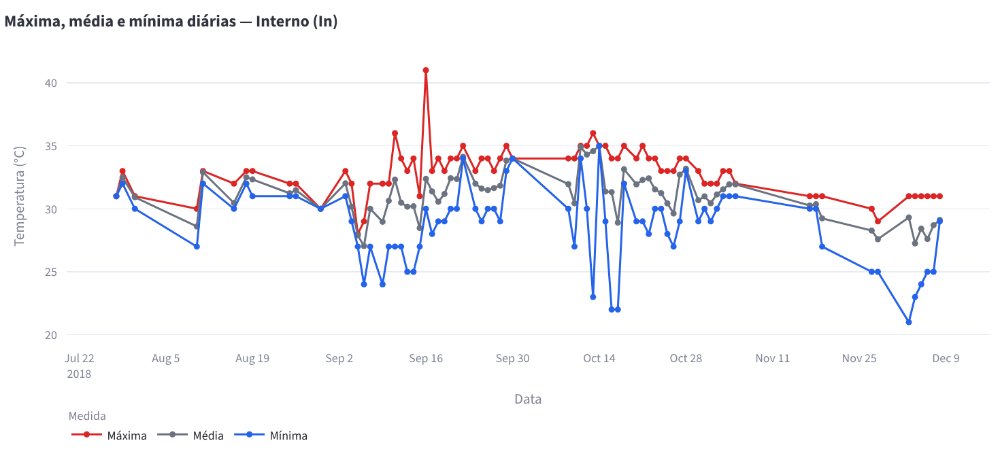
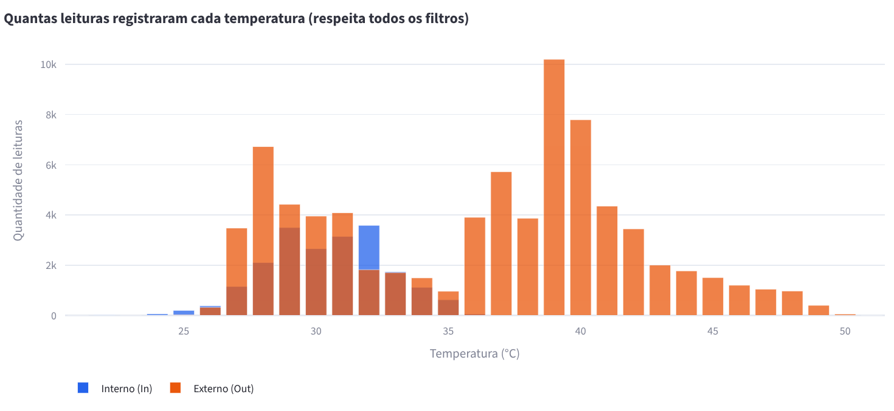

Disciplina: Disruptive Architectures: IoT, Big Data e IA
Professor: Felipe Bonatto
Pipeline de Dados com IoT e Docker
Ingestão, armazenamento e visualização de leituras reais de sensores de temperatura
Aluno: André Vitor de Oliveira Cirino (RA: 119010)
Outubro de 2026
São Paulo - SP
2026
Dispositivos IoT produzem leituras contínuas que, sozinhas, dizem pouco: valores soltos num arquivo não mostram tendências, falhas de coleta nem diferenças entre ambientes. Para virar informação útil, esses dados precisam passar por um caminho de ingestão, tratamento, armazenamento e visualização.
Este projeto constrói esse caminho de ponta a ponta com dados reais de um sensor de temperatura publicados no Kaggle. O resultado é um pipeline reproduzível: qualquer pessoa clona o repositório, sobe o banco com Docker, roda dois scripts e abre um dashboard interativo.
Objetivo geral: desenvolver um pipeline de dados IoT que processe, armazene e visualize leituras de temperatura usando Python, Docker, PostgreSQL e Streamlit.
Objetivos específicos:
| Tecnologia | Papel no projeto |
|---|---|
| Python | Linguagem de todos os scripts do pipeline. |
| Pandas | Leitura do CSV, conversão de tipos, limpeza e validação. |
| Docker / Compose | Executa o PostgreSQL isolado, iniciado com docker compose up -d. |
| PostgreSQL 16 | Banco relacional que guarda a tabela de leituras e as views. |
| SQLAlchemy + psycopg2 | Conexão do Python com o banco e execução de SQL. |
| Streamlit | Interface web do dashboard, com filtros. |
| Plotly | Gráficos interativos com tooltips, zoom e legenda. |
| GitHub | Versionamento e publicação do código. |
| Kaggle / kagglehub | Origem do dataset e download automatizado. |
Kaggle (CSV) → Python/Pandas → PostgreSQL (Docker) → Views SQL → Streamlit + Plotly → Dashboard
download_data.py baixa o CSV com kagglehub para data/.load_data.py padroniza nomes, converte data e temperatura e remove registros problemáticos.temperature_readings e cria as views.validate_db.py executa consultas de conferência no banco.dashboard.py consulta as views e exibe os gráficos.As credenciais ficam num arquivo .env (fora do Git); o repositório traz apenas o modelo .env.example.
Pré-requisitos instalados: Python, Git e Docker Desktop (com WSL 2, no Windows). Passos:
copy .env.example .env # e definir a senha docker compose up -d # sobe o PostgreSQL 16 python -m venv .venv .venv\Scripts\Activate.ps1 pip install -r requirements.txt # pandas, psycopg2-binary, SQLAlchemy, streamlit, plotly... python src/load_data.py python src/validate_db.py streamlit run src/dashboard.py
Temperature Readings: IoT Devices (Kaggle, autor atulanandjha), arquivo IOT-temp.csv, com 6,9 MB, 97.606 linhas e 5 colunas. As leituras vão de 28/07/2018 a 08/12/2018 e vêm de uma única sala (Room Admin), com sensores interno e externo.
| Coluna | Tipo | Conteúdo | Observações |
|---|---|---|---|
| id | texto | identificador da leitura | 97.605 valores únicos (1 repetido) |
| room_id/id | texto | sala | um único valor: Room Admin |
| noted_date | texto | data e hora | formato DD-MM-YYYY HH:MM |
| temp | inteiro | temperatura (°C) | mínimo 21, máximo 51 |
| out/in | texto | ambiente | Out: 77.261 · In: 20.345 |
O dataset não contém valores nulos. O exemplo do enunciado usa device_id, mas essa coluna não existe; por isso as análises comparam os ambientes interno e externo.
O script load_data.py aplica as etapas abaixo e informa cada contagem no terminal:
out/in → location, por exemplo);noted_date com formato explícito %d-%m-%Y %H:%M, evitando trocar dia por mês;Resultado: 97.606 linhas lidas → 97.605 registros válidos inseridos. A carga roda numa única transação (TRUNCATE seguido de inserção), então executar o script de novo não duplica dados; isso foi testado rodando a carga duas vezes.
O banco roda na imagem oficial postgres:16, com volume persistente e healthcheck definidos no docker-compose.yml. A tabela criada é:
CREATE TABLE temperature_readings (
reading_id TEXT PRIMARY KEY,
room_id TEXT NOT NULL,
noted_at TIMESTAMP NOT NULL, -- indexada
temperature SMALLINT NOT NULL,
location TEXT NOT NULL CHECK (location IN ('In','Out'))
);
A validação no banco confirmou 97.605 registros, nenhum valor nulo, temperaturas de 21 a 51 °C (média de 35,05 °C) e o período de 28/07/2018 07:06 a 08/12/2018 09:30.
Agrupa por ambiente e calcula quantidade, média, mínima, máxima e desvio padrão. Serve para comparar o comportamento térmico dentro e fora da sala.
SELECT location AS ambiente, COUNT(*) AS quantidade_leituras,
ROUND(AVG(temperature)::numeric,2) AS temperatura_media,
MIN(temperature), MAX(temperature),
ROUND(STDDEV(temperature)::numeric,2) AS desvio_padrao
FROM temperature_readings GROUP BY location;
| Ambiente | Leituras | Média | Mín. | Máx. | Desvio |
|---|---|---|---|---|---|
| Out | 77.260 | 36,27 °C | 24 | 51 | 5,72 |
| In | 20.345 | 30,45 °C | 21 | 41 | 2,24 |
Para cada hora do dia (0–23) e ambiente, conta as leituras e calcula a temperatura média. Mostra quando os sensores mais transmitem e como a temperatura varia ao longo do dia.
SELECT EXTRACT(HOUR FROM noted_at)::int AS hora, location AS ambiente,
COUNT(*) AS quantidade_leituras, ROUND(AVG(temperature)::numeric,2) AS temperatura_media
FROM temperature_readings GROUP BY 1, 2 ORDER BY hora, ambiente;
Para cada dia e ambiente, traz mínima, máxima, média e quantidade de leituras. Permite acompanhar a evolução no tempo e identificar dias atípicos ou sem coleta.
SELECT DATE(noted_at) AS data, location AS ambiente,
MIN(temperature), MAX(temperature), ROUND(AVG(temperature)::numeric,2), COUNT(*)
FROM temperature_readings GROUP BY 1, 2 ORDER BY data, ambiente;
O dashboard tem filtros de ambiente, período e faixa de temperatura, quatro KPIs no topo e quatro gráficos interativos.





Em um ambiente real, a mesma arquitetura pode monitorar data centers, câmaras frias, estufas ou salas de servidores. As mudanças principais seriam:
O projeto mostrou na prática as etapas de um pipeline de dados IoT: ingestão de uma fonte externa, tratamento e validação, armazenamento num banco em contêiner, modelagem de consultas com views e visualização interativa. Analisar o schema real antes de codificar foi decisivo, porque o dataset não tinha a coluna device_id do exemplo e o formato de data exigia conversão explícita. Os dados também revelaram problemas típicos de IoT, como coleta irregular e possível inconsistência de fuso horário, que reforçam a importância da qualidade de dados e do monitoramento dos próprios sensores. O uso de Docker e de um README detalhado torna o trabalho reproduzível por qualquer pessoa.
Repositório: [LINK DO GITHUB] · Vídeo: [LINK DO VÍDEO]